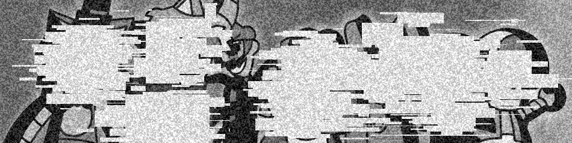
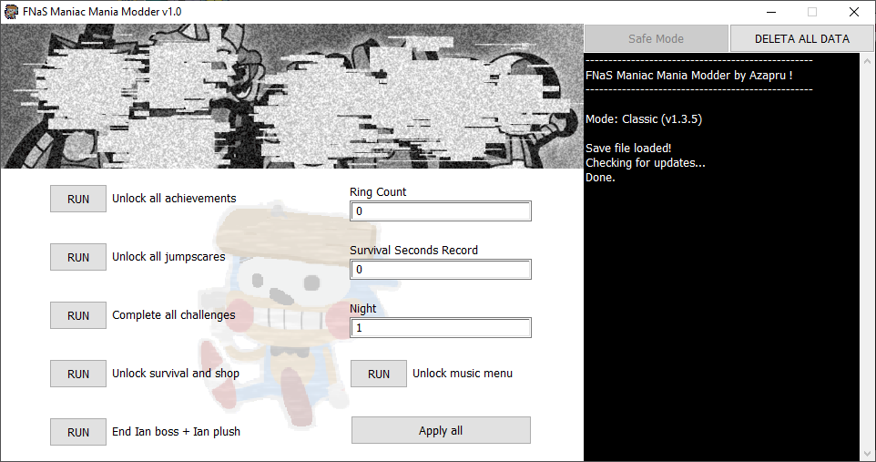

FNaS Maniac Mania Modder
The #1 save editor for FNaS Maniac Mania
Download (v1.0) (Classic Only)
Features:

- Ability to unlock:
* All achievements
* All jumpscares
* Survival and Shop
* Music menu
- Ability to edit:
* Rings count
* Survival record time
* Current night
- Currently supports only FNaS MM Classic
- Easy to use GUI
- Log output
- Erase save file in one click
-
Showcase Video:
-
FNaS Maniac Mania Modder is NOT affiliated with SmilerFurcifer or Team Cyantix
Software and website by Azapru
2022